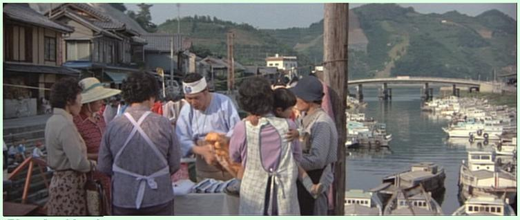
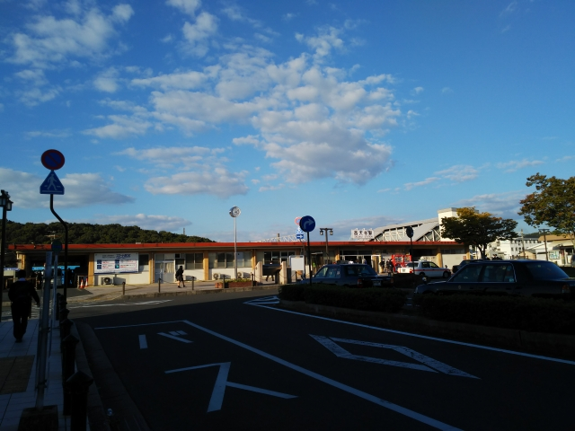

竹原を出航！
松山まで行けるんかな？
瀬戸内海も、西側は島が多くて、東側とはまた違った景色
が展開して楽しいです。
おっ！港が見えてきた。松山の港かな・・・
なんか違うなぁ。こんな小さい港やないど。
着岸したら、大崎上島の垂水港やった。
港にはバスという名のハイエースみたいな車が停まってた
ので、とりあえす乗り込むことに。
「おと姫バス」か。乗客は地元のお年寄りばっかりでした。
島の南側の明石港まで連れて行ってくれました。
明石港に到着。松山まで渡れるんかな・・・
雨でもないのに、えらい大きな水たまりがあるけど。

出航まで時間があるから、港のまわりをブラブラして戻って
来たら・・・待合室が冠水！？
どうもこれが「高潮」だそうです。
高潮注意報が出てたみたいで、高潮をなめたらアカンと痛感
しましたわ。
高潮を実際見たのは初めてっす。
来た来た。
明石港を出港
秋晴れの下の瀬戸内船旅って、サイコー！！
あれっ？松山とはほど遠い港やど。
いい感じの港やけど。

ここは大崎下島の小長港でした。
まだ広島県か・・・
大崎下島？御手洗港がある島やん！
久々に行きたかったから、ちょうどええわ。ちょっと寄り道
しよ
小長港から歩いて御手洗まで向かう途中に通りかかった
大長地区。
男はつらいよ 第２７作「浪花の恋の寅次郎」で寅さんが
バイをしてたところですね。

なかなか渋い町並みです。
御手洗の街並み
向かいの岡村島まで行けば、そこから今治行きの船が出て
るということなので、歩いて行くことに。
大崎下島と岡村島の間には小島が２つあって、橋がかかっ
てます。
橋から小長港を見ると、まだフェリーが泊ってました。
みかん畑が多いっす。

なんと橋の上に県境が！
これ、クイズになるんとちゃう？
「愛媛と広島の県境は歩いて渡れる ○か×か！」
（しまなみはチャリだけか？歩きもOK?）
歩いて岡村島まで来ると、向かいに御手洗の街並みが見えます。
岡村港到着。
いや～、ここの風景が最高でした。
なのに！
ここでバッテリー切れ！
ここからもいい景色が続いたのに、紹介できずに残念。
このあと、無事今治まで渡って、松山の仕事には間に合いました。
ちなみに、岡村港までは呉から橋づたいに来れます。
なので、ここ岡村港から今治までフェリーに自転車載せると、広島方面から四国まで自転車
で行けます。
また、ここから大三島までもフェリーがあるので、サイクリストがたくさんいました。
今回は、松山の仕事のあと、高松でも仕事があった
ので、翌日は高松でした。
時間があったので、仏生山の車庫まで行ってみました。
※高松築港駅
おるおる！
元京急の６００型やがな。
高松方向に戻ると、側線にレトロ電車が！
もうひと編成のレトロ電車発見！
でも、民家３軒越しで、よくわかりませ～ん。
撮り鉄向けに、私有地に入るな看板があったので、ここが限界っす。
仏生山駅に戻ると、京急色の元京急１０００型が来ました。
ホームから珍車デカ１形も発見。
高松に戻る列車も、京急色でした。
仕事が終わって、家に帰ったのですが、何を勘違いしたか、マリンライナーを岡山で降りるところ
を間違って児島で降りてしまいました。
次の電車を待つ間、駅前をブラブラしてると、気になる貼紙が・・・
何！瀬戸大橋に行く路線バスがなくなるって！！
ということで、なくなる前に乗ることに。
岩黒島までやってきました。
島なのに、船では行けないなんて、おもろいがな。
昔はいろんなバス会社の路線があったんやなぁ。
バス停は高速道路沿いにあって、そこからエレベータで上陸します。
（上陸ですが、エレベータは下りです）
島民は、自家用車で本州行けるみたいですが、毎回高速代
払うんやろか・・・
児島にバスで戻ります。
帰りは、一度見てみたかった、西大寺鉄道の車輛を見物しました。
岡山と西大寺を結んでたので、２１世紀まで残っててもおかしくなかった鉄道です。
保存状態は良好です。
ちょっと足を延ばして、あの裸祭りで有名な西大寺観音院へ。
この境内が、裸の男で埋め尽くされるんすね。ぞっとします。

赤穂線の西大寺駅。
もたもたして、もう少しで播州赤穂行に乗り遅れるところでした。
次は迷わずに行きたいものです。